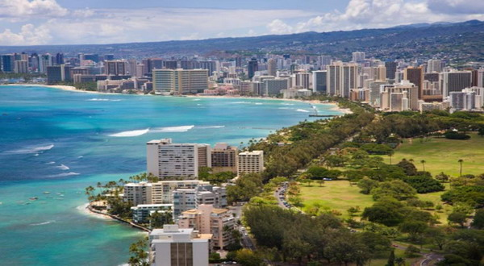
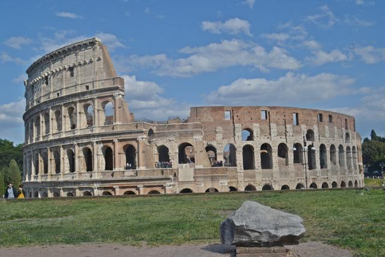
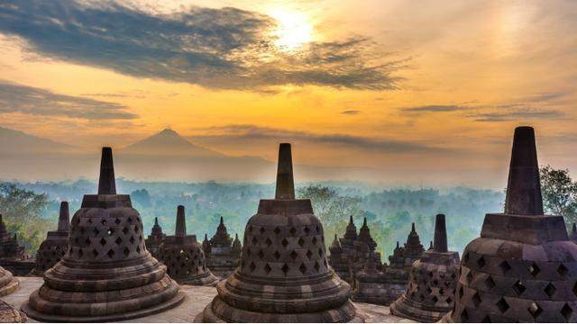

Gunung yang indah dan penuh dengan legenda ini terletak di
Propinsi Jawa Timur, dengan
ketinggian sekitar 3265 diatas permukaan laut.
Gunung yang indah dan penuh dengan legenda ini terletak di
Propinsi Jawa Timur, dengan
ketinggian sekitar 3265 diatas permukaan laut.
Detail Tempat Wisata
Gunung Lawu
Gunung yang indah dan penuh dengan legenda ini terletak di
Propinsi Jawa Timur, dengan
ketinggian sekitar 3265 diatas permukaan laut.
Harga paket perjalanan wisata : Rp. 1.000.000 (3H2M)
Hawaii

Kepulauan hawaai merupakan pulau yang indah dengan pantai-pantai yang eksotis. Dengan tarian yang khas, dan keramah-tamahan penduduknya.
Harga paket perjalanan wisata : $4000 (3H2M)
Colosseum

Colosseum merupakan tempat bersejarah di eropa terutama untuk bangsa Roma, yang berada di negara italia. tempat ini dulunya adalah arena bertarungnya gladiator, dan dibangun oleh Vespasian. tempat ini banyak dikunjungi oleh turis karena bangunan arsitektur yang indah dan menarik.
Harga paket perjalanan wisata : $5000 (3H2M)
Borobudur

Borobudur merupakan salah candi yang bersejarah dan terkenal didunia, candi ini terletak di Magelang, Jawa Tengah, Indonesia. tempat ini banyak dikunjungi oleh turis karena candi ini sangat indah dan memiliki nilai sejarah yang tinggi.
Harga paket perjalanan wisata : Rp 2.000.000 (3H2M)